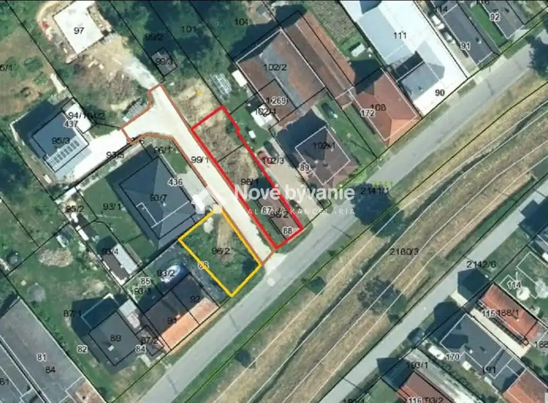
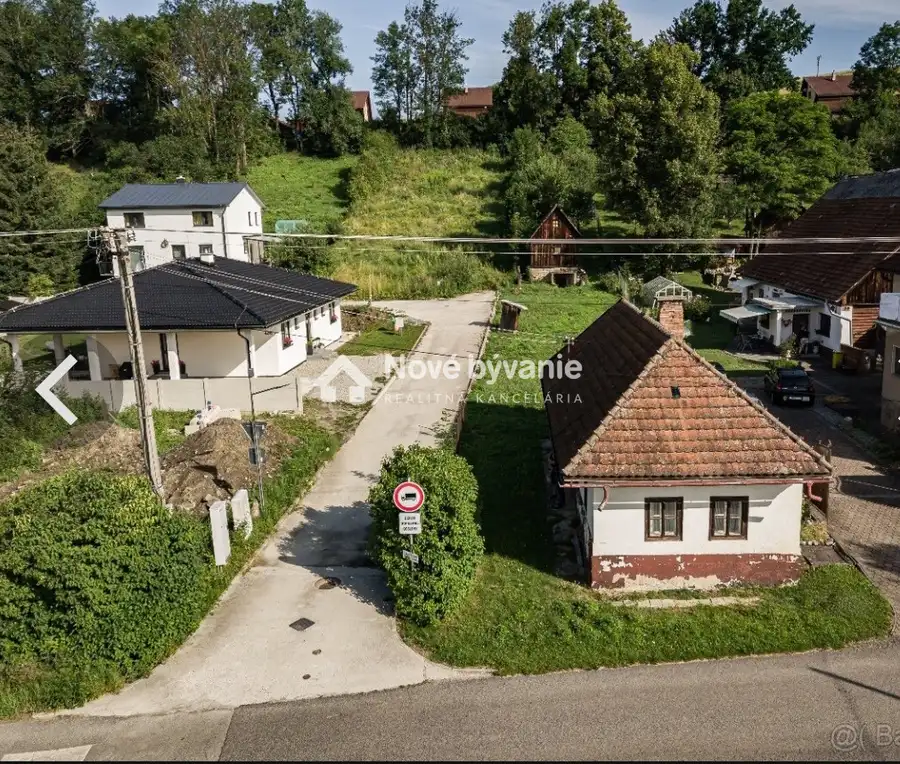
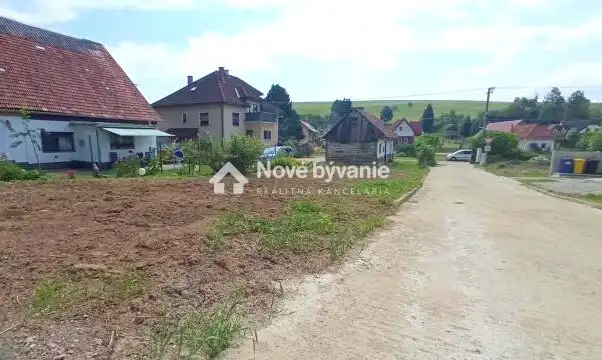
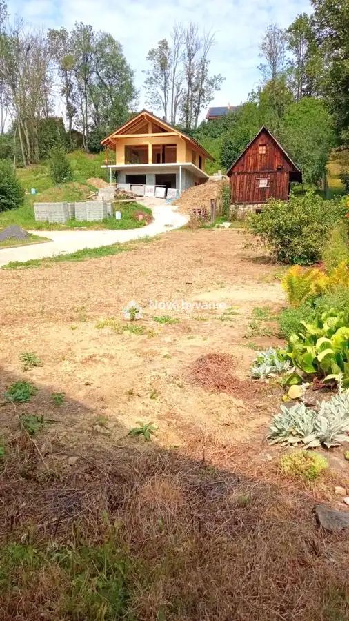
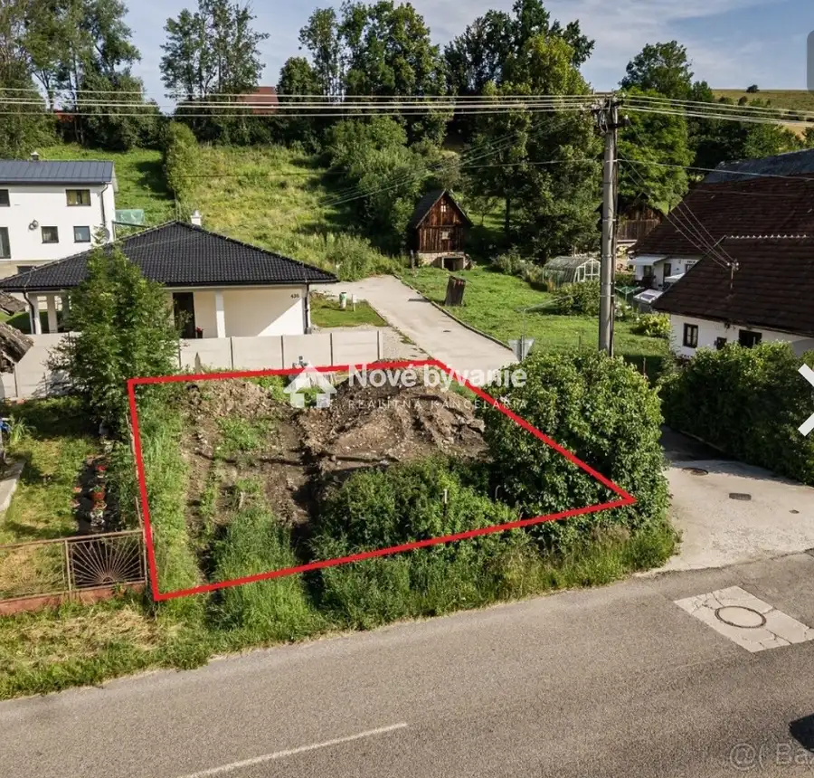
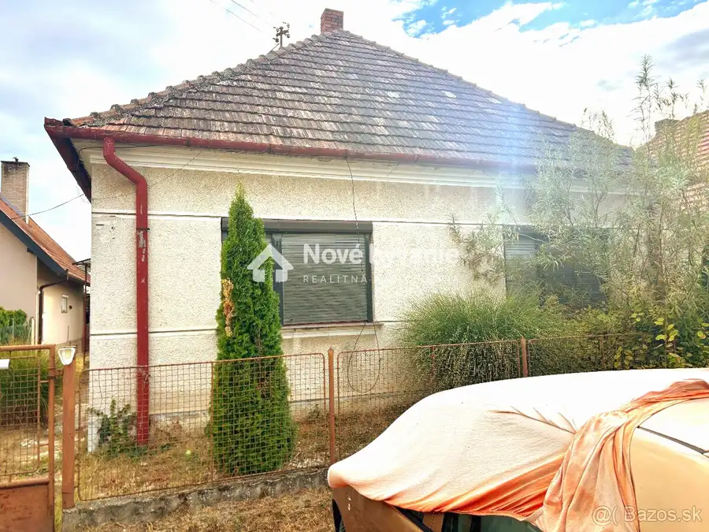
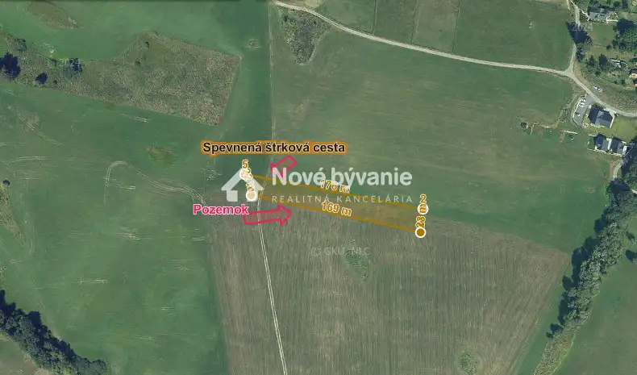
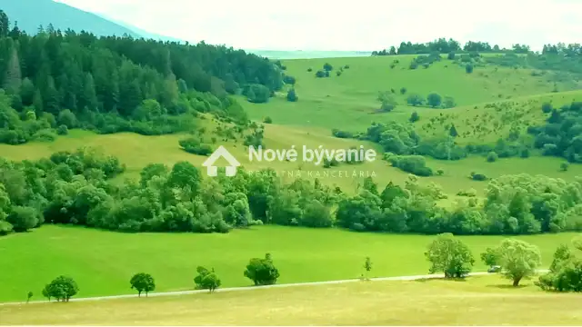

Vidiecky Dom - Liptovský Trnovec, 2 parcely ID: N017-14-PEDU
Liptovský Trnovec





- Plocha112 m²
- StavPôvodný stav
- VlastníctvoOsobné
O nehnuteľnosti
ID:N017-14-PEDU Ponúkame na predaj starší vidiecky domček o rozlohe 62,37m2 (12,35mx5,05m) s využiteľný podkrovím, vrátane dvoch pozemkov o celkovej výmere 569 m2. Nehnuteľnosti sa nachádzajú v kľudnej časti obce Liptovský Trnovec pri potoku Petruška, v zástavbe medzi rodinnými domami.Prvý pozemok, vrátane domčeka, sa predáva vo výmere 350m2 (šírka cca 9m x dĺžka cca 39m) - červený rámček na foto. Na tomto pozemku sa za domom nachádza políčko, ktoré je ideálne na pestovanie domácej zeleniny, chov zvierat, prípadne ako oddychová a relaxačná zóna. Druhý pozemok nachádzajúci sa oproti cez cestu má výmeru 219m2 (šírka cca 12m x dĺžka cca 18m) - žltý rámček na foto. Tento pozemok je ideálny na výstavbu menšieho objektu (chata, chatka, prístrešok pre posedenie a gril, prístrešok pre autá...) alebo ako záhrada. Prístup na oba pozemky je z obecnej komunikácie a taktiež zo súkromnej cesty medzi pozemkami.Všetky IS (elektrina, voda, kanalizácia, plyn) sú na hranici pozemkov. Do domčeka je zavedená elektrika a voda. Lokalita ponúkaných nehnuteľností spája pokojný vidiecky život s dobrou dostupnosťou do mesta a kompletnou občianskou vybavenosťou v okolí.Ak Vás ponuka zaujala dohodnite si obhliadku ešte dnes: 0902 800 429 alebo duras@novebyvaniereality.skCelková cena domu a oboch pozemkov vrátane všetkých poplatkov spojených s prevodom vlastníctva je 79 000 eur.Doplňujúce informácie k domčeku:Lokalita: Liptovský Trnovec (atraktívna a pokojná časť obce).Celková výmera pozemku: cca 350 m² (orientačne vyznačený na priloženej mape).Typ nehnuteľnosti: Samostatne stojaci drevený zrubový rodinný dom opláštený heraklitom s vápennou omietkou.Rok výstavby: 1938Stav objektu: Starší vidiecky dom s potrebou rekonštrukcie. Počet podlaží: Jedno nadzemné podlažie (1 bytová jednotka) a nezateplené podkrovie bez priameho prístupu z domu, spolu využiteľných 112m2 úžitkovej plochy. Miestnosti: Kuchyňa, dve izby a podkrovie.Základy: Pásové z monolitického betónu a kameňa (bez vodorovných hydroizolácií).Materiál: Drevený zrub (hrúbka do 0,20 m), priečky sú tiež drevené zrubové.Strecha: Sedlová hambálková, krytina z pálenej jednodrážkovej škridly, klampiarske prvky z pozinkovaného plechu.Okná a dvere: Drevené kazetové okná, drevené výplňové dvere.Podlahy: V obytnej miestnosti cementový poter a drevená dlážkovica, v ostatných cementový poter a linoleum. Podkrovie drevené trámy a drevené fošne.Stropy: drevené trámy lakované a drevené fošne lakované.Elektrina v dome: Rozvod 230/400V, rozvádzač s poistkami, istená automatickými ističmi.Voda: Rozvod studenej vody z pozinkovaných oceľových rúrok.Kanalizácia: Vnútorná kanalizácia je zaústená do trativodu, obecná kanalizácia je na hranici pozemku.Kúrenie: Lokálne na tuhé palivo (pôvodná piecka je momentálne demontovaná).Možná dohoda na samostatnom odkúpení domčeka s pozemkom 350m2.
Parametre
- Druh
- Rodinný dom
- Dátum zverejnenia
- 09. 08. 2026
- Plocha pozemku
- 569 m²
- Počet izieb / miestností
- 4
- Počet nadzemných podlaží
- 2
- Stav nehnuteľnosti
- Pôvodný stav
- Typ
- Predaj
- Typ konštrukcie
- Drevená
- Vlastníctvo
- Osobné
- Vykurovanie
- Lokálne
- Zariadenie
- Nezariadené
- Zastavaná plocha
- 62 m²
- Úžitková plocha
- 112 m²
Kde to je


Mohlo by Vás zaujímať

DomNové 53 000 €ID:N022-12-PEDU Pozemok 1079 m² s domom (Bátorove Kosihy) Bátorove Kosihy
PozemokNové 27 500 €Pozemok na predaj - Pavčina Lehota ID:N012-14-PEDU Pavčina Lehota
PozemokNové Cena na vyžádáníPozemok, čerstvý vzduch, výhľad - Bukovina ID: N020-14-PEDU Bukovina